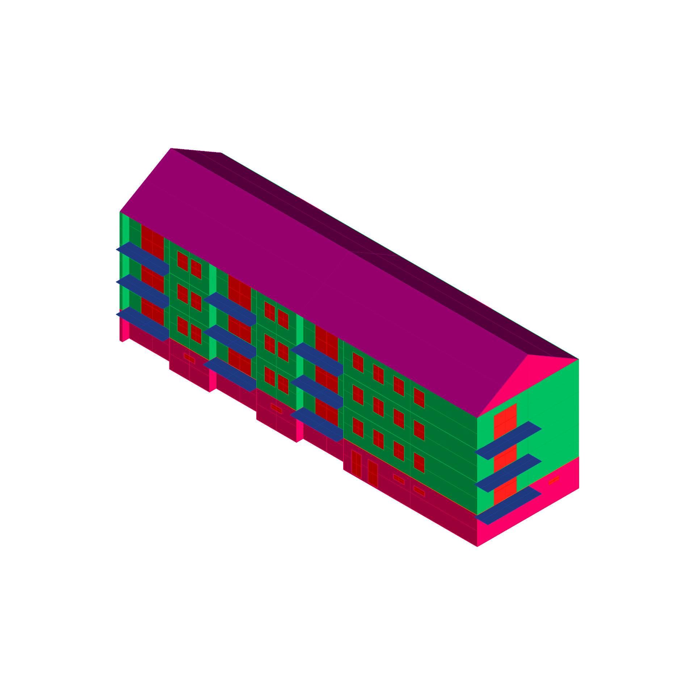
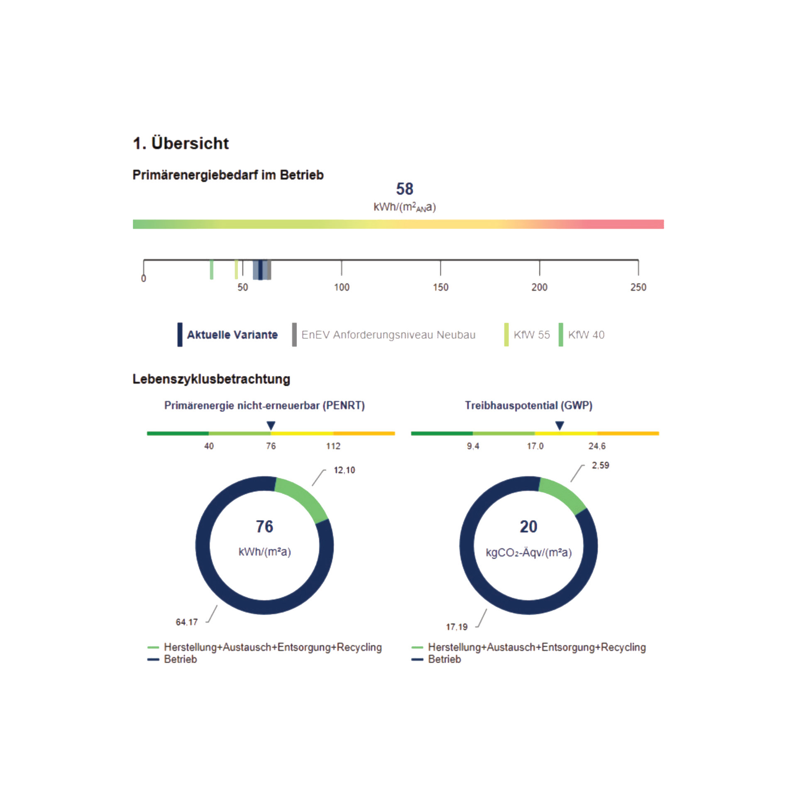
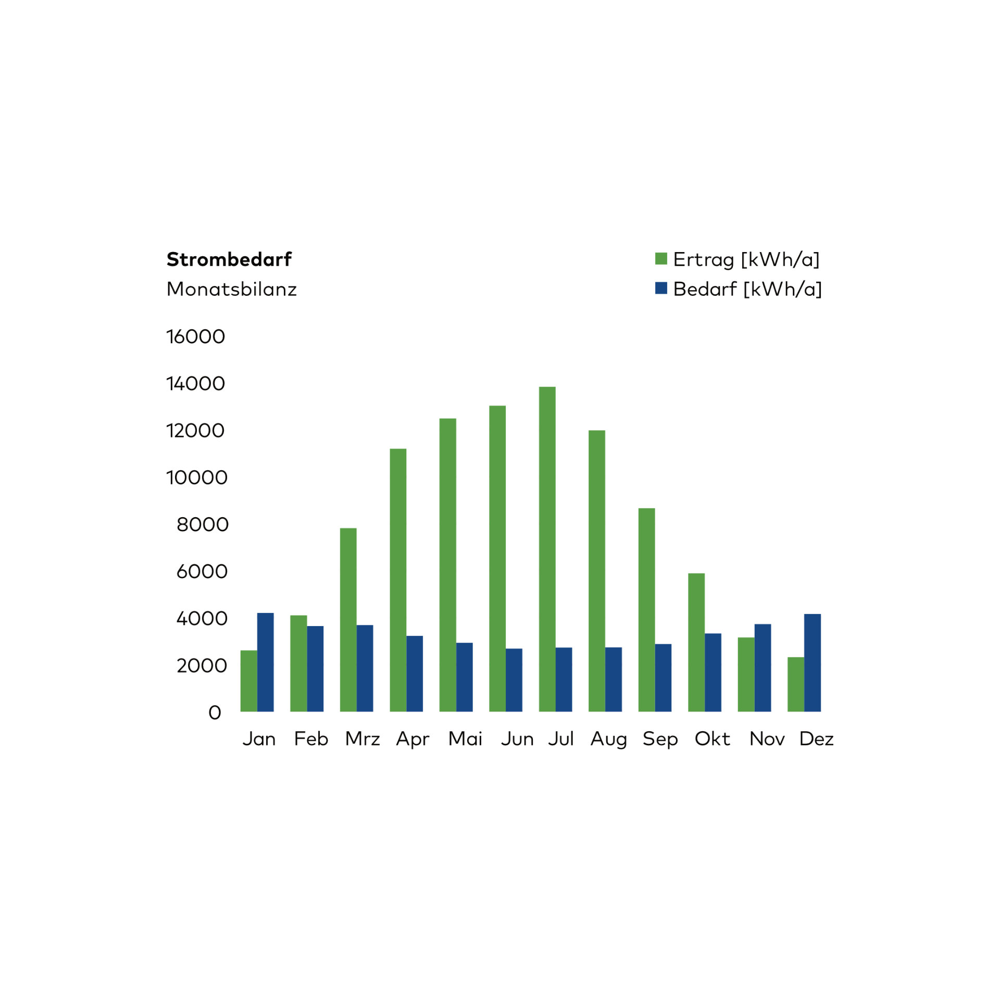

Ökobilanzierung
2020
Entwerfer:innen treffen die maßgeblichen Entscheidungen für den gesamten Lebenszyklus eines
Gebäudes – von Rohstofferzeugung über 50-jährige Nutzungsphase bis zum Rückbau. Ziel ist
minimale Umweltbelastungen in allen Phasen und vollständige Rezyklierbarkeit.
Die
Ökobilanzierung (Life Cycle Assessment, LCA) ermöglicht frühzeitige Abschätzung aller
Umweltwirkungen bereits im Entwurfsstadium. Sie dient der systematischen Bewertung von Varianten
hinsichtlich Ressourcenverbrauch, Primärenergie und CO₂-Emissionen.
Anwendungsschwerpunkte
umfassen Materialauswahl (sortenreine, rückbaubare Stoffe), Konstruktionslogik (modulare
Systeme) und Nutzungsszenarien (Energieeffizienz, Umbau). Nach DIN EN 15978 werden
Lebenszyklusmodule A–D (Produktion, Nutzung, Entsorgung, Recycling) analysiert.
Die Methode
integriert ökologische Optimierung direkt in die Baugestaltung – Voraussetzung für zirkuläre,
klimaneutrale Gebäude.
⬤ Designers make the key decisions for the entire life cycle of a building – from raw material
production to a 50-year usage phase to demolition. The goal is minimal environmental impact in
all phases and complete recyclability.
Life cycle assessment (LCA) enables early estimation of
all environmental impacts as early as the design stage. It is used to systematically evaluate
variants in terms of resource consumption, primary energy, and CO₂ emissions.
Key areas of
application include material selection (single-type, dismantlable materials), construction logic
(modular systems), and usage scenarios (energy efficiency, conversion). Life cycle modules A–D
(production, use, disposal, recycling) are analyzed in accordance with DIN EN 15978.
The method
integrates ecological optimization directly into the building design—a prerequisite for
circular, climate-neutral buildings.
Prof. Dr.-Ing. J. Stopper